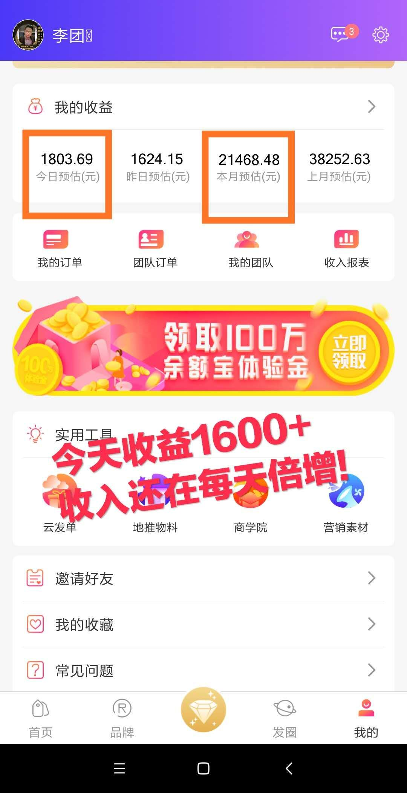
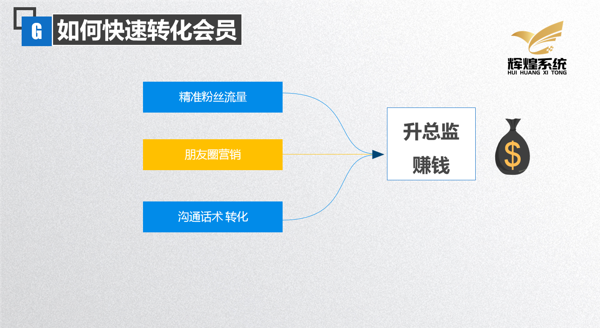
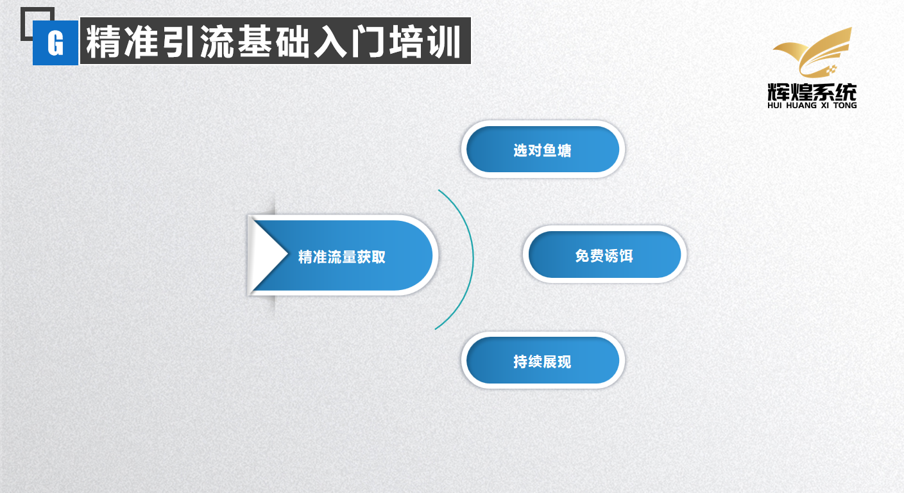
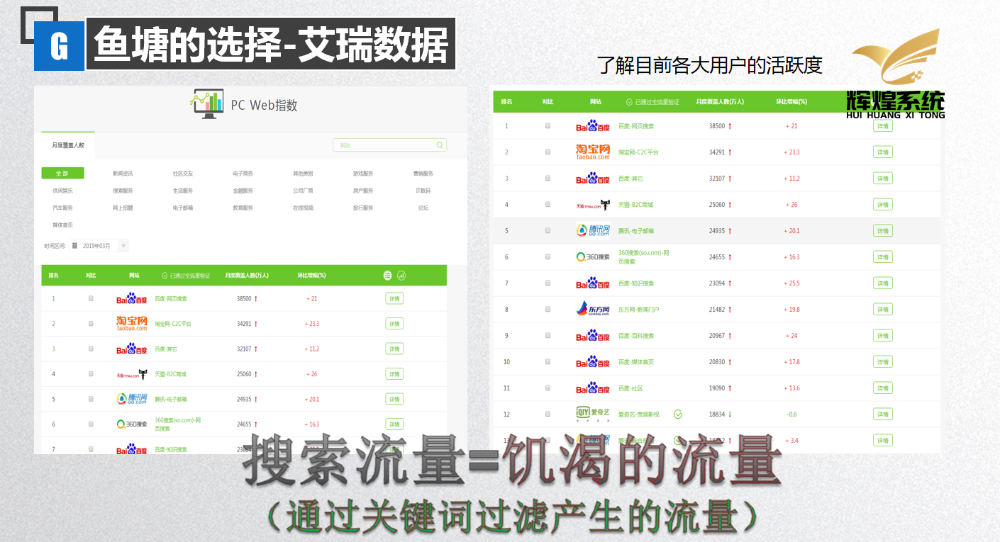
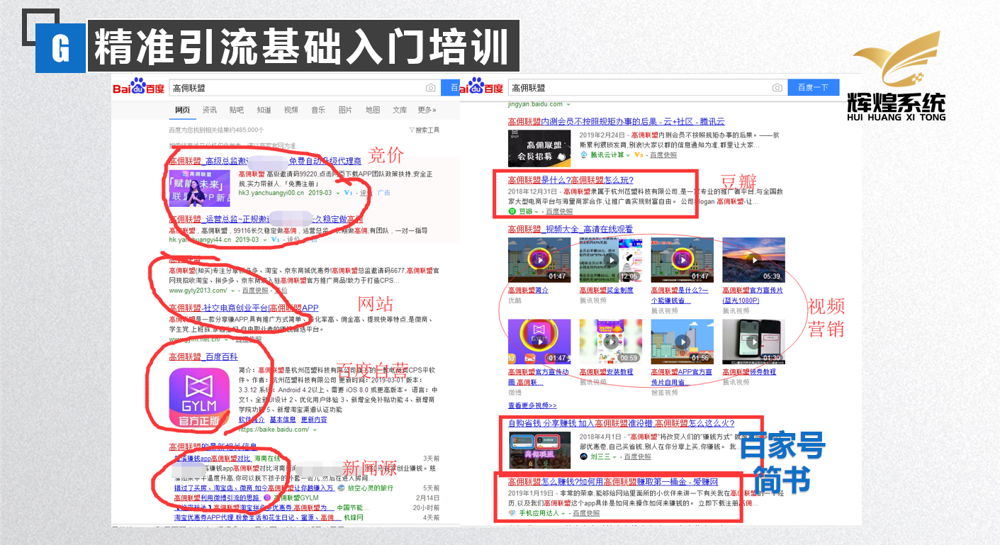
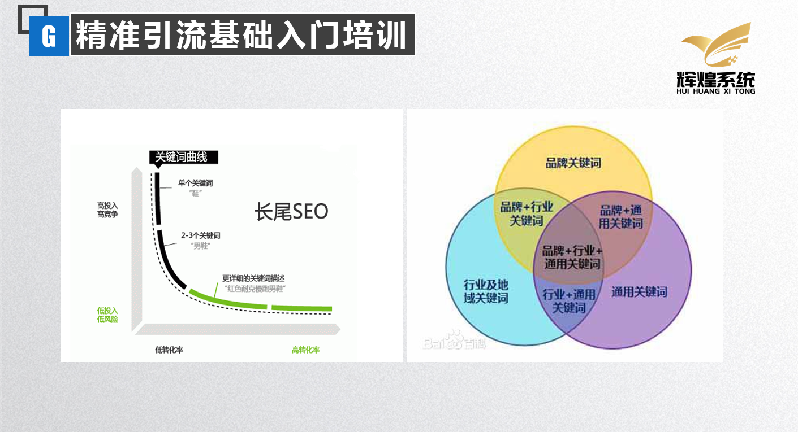

第一期-线上精准粉丝引流
第一期-线上精准粉丝引流
找不到粉丝？ 挖不到流量？ 裂变不成团队？ 高佣商学院黄金周后邀您掘金,这里有你想要的一切财富
钥匙,高佣联盟 成就你我
所有高佣家人们，大家晚上好，今天给大家分享的主题是：精准粉丝运营，教大家快速的裂变，发展自
己的团队，并且今天会分享一个线上引流钓大鱼的方法，也希望我今天所分享的内容对大家做市场有所
帮助。
很多人对我不太了解，先来个简单的自我介绍，我是高佣辉煌系统的联合创始人，我自己做高佣联盟，
比较短的一个时间，是今年二月份才加入的，到现在大概三四个月的一个时间，然后建立了一个自己的
团队，那我之前呢，一直从事互联网的一个项目，大概有五年的一个时间，自己有专门研究过微营销方
面的一些教程和方法，并且自己有一套的一些实战的教程，那么在今天呢，我会把我的一些干货经验以
及实战的技巧，全部在这里分享给大家。

我自己做高佣联盟，短短三个月的一个时间，目前日收入最高的时候能达到一千八两千，并且团队有很
多的伙伴都是在短时间之内，升级到这个运营总监的，那我希望都有进来听课的伙伴，认真听我以下的
一个分享，我相信他对咱们做市场的一些精准引流的思路会有一个不一样的一个层次的提升。

我相信所有伙伴都看懂了高佣联盟的模式。
并且看好他未来发展的一个趋势，还有高联盟的管道收益。那么你现在在努力的付出就决定了你未来三
到五年的管道收益。所以我们想通过互联网赚钱，想做好高联盟，那你的粉丝，你的流量是第一位，如
果你没有人的话，谈不上躺赚和被动收益，对吧。
对于我自己来讲做联网大概有四五年的一个时间，那我总结出了一套赚钱的方法，如果说你想做好高佣
联盟，想通过高佣联盟获得躺赚，被动收益，那么你要学会，精准粉丝引流，你要学会如何去转化你的
客户，也就是营销，还要学会如何跟客户沟通，去把这个客户拿下，让她看懂高佣联盟，并且愿意跟你
并肩做下去，我们只有掌握好这三点，那么你才能顺利的升级到总监。
那么今天我主要跟大家分享一下怎么样推广引流，如何在互联网上获取客户。因为咱们高佣联盟获取客
户的方法很多，在咱们商学院里面也有非常非常多的方法，还有很多的伙伴通过地推也升级到了高级总
监，那么如果以我自己的经验来讲，那么线上分享，线上推广。有什么样的好处呢，就是线上，它是可
以钓到大鱼的。所以今天我会给大家整理一下线上推广的一些原理，只有把我们原理搞清楚，我们接下
来做的一些事情才会事半功倍。

那我们做精准粉丝引流需要以下三个部分：第一个是选对一个流量的鱼塘，第二个我们要有一个免费的
鱼饵，免费的诱饵，可以让这些大鱼上钩。那第三点呢，就是要做到持续展现，只有把这三个部分做到
一个比较好的配合，才能达到到一个好的效果。
1.鱼塘如何选择？

我们在做任何事情的时候，必须得到专业数据的支持，你做出来的东西才会有效，那我们想要钓鱼，要
先找到有一个池塘的大鱼，那找到鱼塘很简单，我们可以通过艾瑞数据，就是通过艾瑞指数，去了解各
大用户的一个活跃度。
我们通过艾瑞指数可以查看两个板块儿，一个是移动APP的指数，一个是PC端的指数，那每个类目下面都
会查看具体的行业分类跟时间，那我们通过这个艾瑞指数主要是看一个月活跃度比较，用户量比较大的
一个平台，那这样我们才能去选择一个比较大的一个鱼塘，那么，我发的这两张图，大家可以看一下，
百度和这个微信，百度它作为一个最大的搜索引擎入口之一，那么我们就可以通过这个百度的鱼塘去寻
找我们的大鱼。
有一句话叫做有问题找度娘，基本在人们的潜意识当中，只要生活当中遇到一些问题，或者是对一些项
目进行考察，他的第一次时间就是通过百度搜索这类问题的相关的答案，去寻找一些有价值的信息，所
以百度的这个搜索引擎入口我们就要利用起来。
2.免费诱饵
当我们找到流量入口之后，不要直接去发广告，这样的效果会非常的差，因为用户在使用这些平台上来
讲，他不是去为了看广告的，他是为了去寻找价值。你只要去提供有价值的东西送给客户，那客户他自
然儿然愿意去加你，很多人在做百度推广的时候为什么效果不好，因为他就是没有搞清楚这件事情，没
有人会愿意看广告。但是很多人他是愿意在百度上寻找有价值的信息。
比如说你现在手上有1万块钱。让你把这1万块钱去送给每人100块钱，那你觉得这个100块钱能送出去吗
，肯定会非常的快，因为用户他体会到了价值，毕竟钱是每一个人都需要的东西，那我们在做推广的时
候也一样，一定要找到。精准用户，他需求的东西。那你可以理解在百度上有很多这种类型的鱼，不同
的这种大鱼、小鱼，那他喜欢的这种鱼饵自然也是不一样的，你要找到每一种鱼他爱吃的这种鱼饵，他
自然就会跟你去上钩。
3.持续展现
我们找到了用户量比较大的平台，也提供了用户所需要的诱饵，那自然能给我们去带来流量。但是这个
流量他并不是持续的，而且也不是长久的，并且在百度上大家可以看到它是有排名有权重的，我们通过
什么样的技巧，可以让自己信息获得比较高的权重，让我们发的软文排在别人的前面，那这个呢，是我
接下来会跟大家分享的一个技巧，那在我们做这个持续展现上面，有很多的平台是能用到的，那比如社
区类的平台，像天涯、贴吧，或者是搜索引擎的平台，或者是社交类的平台，那这些呢都是可以通过提
供价值，然后让客户去找到你。
以上使我们做精准引流的思路过程，接下来教大家具体如何去做

想要做好百度线上的精准粉丝引流，它是需要方法和技巧，还有时机以及创新的，我们高佣联盟从去年
三月份开始到现在也一年多了，很多的伙伴也在做这个百度推广，那怎么样能干掉他们，怎么样能比他
们做的还好，那我在这里呢，跟大家提供几个思路，大家可以看一下我发的这张图，我们在百度上去搜
索高联盟的时候，可以看到有很多关于高佣联盟的这些文章。
我先跟大家普及一下这些网站的类型它代表什么样的含义，第一个是百度竞价，很多人可能听说过，那
百度竞价就是花钱来让百度帮你去做推广，让别人点进去这个网站，那按照点击来收费的，那这一般呢
，是家里有矿的同学会选择百度竞价，一天烧个几百块上千块钱。但是能得到的一些效果就要看时机的
问题了，那很多伙伴们应该是刚做高佣联盟，他也不可能去投入这样的一个资金，去做这件事情，所以
这个不建议去做竞价，那么我们接下来再看。
接下来是创建的网站，他也不适用于新手。还有百度旗下的一些资源平台，比如说文库，贴吧，还有一
些新闻源的推广，那在图片的右边还有百家号，简书等等，还有新浪微博，博客这些，那这些哪些适合
我们这种去做。那我个人推荐，如果说你的这个原创能力比较强的话，可以去做一下简书，因为他的权
重是比较高的，我会详细教大家如何来去做一些软文。
做一篇价值输入的文章，先了解 关键词
刚才有跟大家提到，做百度引流最重要的是创新，最重要的是你的一个思路，你的方向跟别人不一样，
有另辟蹊径的这种想法，那效果得到的也是不同的，那我在这里呢，给大家提供一个比较常规的一个思
路，我们完全可以通过我的这个举例，大家举一反三，那我再给大家讲讲什么叫做关键词，因为每一个
用户，他在网上去寻找高佣联盟这个词的时候，他是对这个行业，对这个项目有极大的需求的，那么这
个人就是我们的客户，也是我们所谓的寻找的对象。
那高佣联盟这个词就会成为一个主要的关键词，那高佣联盟是什么，高佣联盟怎么样，高佣联盟这个平
台好不好，在我们关键词后面去加一些修饰，就叫做长尾关键词，那么一般来讲，很多人在去搜高佣联
盟的时候，他都会去寻找一些自己想对高佣联盟了解的那个部分。比如说高佣联盟他是哪家公司的，公
司是否正规。那这些词都叫做长尾关键词，大家可以理解一下关键词，跟长尾关键词的关系。

大家可以理解一下这个关键词跟转化率的一个关系，当你的这个关键词越精准的时候，我相信在百度上
搜索的人也会越多，那越多也就代表着竞争越大，他的实际转化率会越低，但是这个关键词越多的话，
那比如就是说高佣联盟怎么样做，高佣联盟是什么，然后加入什么样的团队，怎么样去领优惠券，那你
搜的这个长尾关键词越长，他的转化率也会越高，就是用户的需求也会越精准，我们自己去做这种软文
的时候，一定要选择一个比较好的关键词，这是重点，关键词可以有成千上万种组合，我们没有必要，
就是只拿着这个高佣联盟不放。就像我们可以想另外一种思路，高佣联盟是一个关键词。在这个行业的
同行来讲，还有非常多的关键词，比如说某某日记，比如说某某省，比如说什么蜜源啊之类的，这些都
是我们的友商平台，我们同样可以用这种方式去转化友商的一个会员，那现在高佣联盟有4000多万的用
户，网购市场大概是9亿的一个市场，还有很多人需要我们去开发，需要去整合。不仅在我们友商这个小
圈当中。还有一个比较大的圈，叫做优惠券这样一个关键词，我们可以在网上去搜索，哪个优惠券平台
比较好，哪个返利平台比较正规，返利比较高，那这些词他都可以成为我们的一个长尾关键词，如果说
我们的思维以我这样的方式去拓展的话，那你会有非常多的关键词。
在课程开始时我跟大家提到过我们在做任何事情，一定要有一个专业数据，作为一个支持。我们做下去
之后才能事半功倍，那我们在找关键词的时候，大家可以利用这个百度指数，百度指数呢就是可以查到
这个关键词每天有多少人通过百度外部端、或者是手机端，在去搜这个词。那我们就能了解到这个词的
一个需求量有多大，我们适不适合，该不该去做这样的一个词，所以大家可以自己在百度上去搜百度指
数，然后去搜索高佣联盟或者是搜索优惠券，对对词你就会发现这类词所衍生出来的这种长尾关键和用
户群体都有一个比较详细的展示。
通过高佣联盟在百度指数上去搜索这个词的时候，大家可以发现，所有用户在去搜索高佣联盟这个词的
一些侧重点完全可以通过指数去展现出来，那我们再去做关键词的这种价值输出的时候。要把你的侧重
点就围绕着客户的需求，并且需求多的这个方向去做，让你最终能得到这个效果才会好。
你再继续把这个圈扩大，我觉得所有想赚钱的人都可以加入高佣联盟的，因为我觉得高佣联盟是适合所
有人作为一个创业的项目，只要你想挣钱，所以我们可选择的关键词非常非常多，一定不要去选择跟你
竞争特别大的，那最终的效果会很小，这个就是我们关键词的一个选择的问题。
做出一篇价值输出的文章，如何做软文
那么继续，我们通过百度指数找到了自己想做的关键词，那么接下来你就要围绕着你的这个关键词来进
行价值输出，你的所有关键词一定是围绕客户需求去做的，那你的这个文章的内容也就不要以广告的形
式去做。不要直接，比如说你加入我们团队我们带你赚钱，客户他想通过百度去搜索高佣联盟这个平台
的奖金制度，这个平台的佣金比例是多少，那么你这篇文章的主要价值输出点，就在这个佣金的比例，
或者是这个奖励制度的整个的规划上面来讲。
做好软文第一点：围绕关键词输出价值
那我们做好软文的第二点，这个文章尽量在百度上搜不到的，也就是所谓的原创，这样才会被百度收录
并且权重比较高的这个概率会大。
很多人，我相信可能写文章的能力不是那么的好，并且让你写一个比较有价值，别人看到还愿意加你的
文章，我相信对很多人来讲，或者对于我来讲都不是一个比较容易的事情，那么我们在写文章上面可以
去借鉴或者是伪原创，百度上的一些文章。
做好软文第二点，原创！不会原创就伪原创
如果你的文章是原创的，那么被百度收录的概率会高，而且你的这个文章的权重会比较靠前。因为对于
一个关键词来讲，在百度上不止你一个人去发布这个软文，有很多人去发布。你这个软文的价值能被很
多人去看到，那么百度就会认为你这篇文章是最有价值的，那么你这篇文章排名靠前的概率会高。
那什么叫做伪原创，因为刚才我提到过很多人是不会，也没有能力自己去写出一篇文章出来的，我们这
个时候呢可以通过在其他网站上去搜索一些文章，然后把这些文章可以通过段落的形式给他撮合刀一篇
文章，然后在百度上去搜索伪原创，他会有很多的这种网站。可以把你的文章复制进去，然后伪原创。
就会出来一些新的文章，简单说他就是把你原来的这个文章里面一些词语变换另外一种形式，让百度认
为你的这篇文章，他是一个新的内容。
以上的内容就是大家想要做百度精准引流，必须要会的几个思路跟几个知识点。
如果说你能把关键词跟软文全部搞懂，我之前去做这种软文推广的时候那至少50个关键词起步，每个关
键词至少做两篇文章出来，这些文章全部都得需要加上一些图片，加上你的一些隐藏微信号，你可以在
各种贴吧、论坛、微博一些社交网站上去发，网站类型有很多，每一个平台，每一个网站，它发的方式
都是不一样的，因为做这种软文如果你直接去发到贴吧上面可能你会被面临秒杀的可能性。
基本上每一个网站它为了防止这种类似广告的文章进入到这个平台，他会进行一系列的举措，就是为了
让你这篇文章有你的的联系方式有你的微信号，所以我们在去发布软文找到一个好站点的时候，大家可
以看一下我上面发的图片，既然别人通过这些网站发布成功了，能获取到他的微信号跟手机号那我们也
可以通过同样的方式去做这件事情，每个平台它是有每个平台的规则，比如说百度贴吧，他是有一个非
常详细的一个顶帖，或者是成为吧主的一个流程，对于贴吧来讲，每个贴吧你必须需要一个比较高的等
级，贴吧发展这几年比较成熟，在几年前的时候，可能你之前发几篇帖子被删的概率比较低，但是现在
如果说你是新的帐号，你只要发类似广告任务文章，他是秒删的，可能你的帐号有被封的风险，你需要
怎么做呢，你需要把你的账号养号，养成比较高的的等级，然后要去贴吧里活跃，让系统认为是一个在
贴吧里面做交流的账号，再过一段时间去发这种软文的广告，那么才有可能成功。
而且你要用一些软件去顶你的帖子，让你可以一直出现在首页，才能够得到一个比较好的效果，对于百
度旗下的这种发展比较成熟的贴吧，现在在做的时候会有很多的困难，所以我个人建议先把关键词跟软
文这两方面研究明白，然后你可以先去发简书，或者是你个人新浪微博或者博客，每天坚持去做几个关
键词，他肯定是有效果的，而且大家可以看到我上面发的那张图片，在图片里面能出来的这些网站说明
是没有被封，也没有被删，而且效果还不错，出现在了首页或者是第二页的位置，大家也可以用我教大
家做这种关键词的方式去发这类站点。
这种百度线上推广，它只是我们做推广的一种方式，大家可以根据自己的时间，精力，选择适合你自己
的去做。如果说你地推非常有效果，那你就可以坚持地推把一件事去做精。如果说你对网上推广有兴趣
那么你就可以主动的去研究一下这个网上推广怎么去做，因为毕竟线上推广它能给你带来的流量跟钓到
的鱼的分量一样的，线上推广它是能经常去找到一些大的团队领导人和一些大咖的，我相信有很多伙伴
会深有体会。
分享第一期-线上精准粉丝引流到此结束，感谢导师给大家的分享，请各位高佣小伙伴等待下一期导师分享。
-
183
邀
-
4925
请
-
2480
码